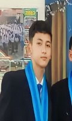

| Curiculum Vitae | DRIVE | COMPANY PROFIL | Portofolio | |
|  |
Tentang SayaPerkenalkan, nama saya Satria Dwi Angkasa, anak kedua dari tiga bersaudara, lahir di Wonogiri pada 20 April 2008. Saat ini, saya tinggal di Dusun Jelok, Desa Sumberejo, RT 04/RW 02, Jatisrono, Wonogiri. Saya seorang Muslim, dan agama menjadi panduan hidup saya. Saya sangat tertarik pada dunia olahraga meskipun masih perlu banyak latihan. Saya menikmati berbagai olahraga, terutama sepakbola, yang memberikan semangat dan kebugaran. Saat ini, saya bersekolah di SMK Negeri 1 Jatiroto, memilih jurusan Pengembangan Perangkat Lunak dan Gim (PPLG) karena minat besar saya di bidang teknologi. Harapan saya ke depannya adalah mencari modal untuk membuka wirausaha dan menciptakan lapangan kerja bagi masyarakat. |
|||
|
|
Pendidikan :
|
|||
|
Telepon: (+62) 877 8128 1899 Email: satriangks@gmail.com Instagram: @satriayooya Tiktok: @satriangks |
||||
Pengalaman:
|
Keahlian AplikasiBerikut adalah beberapa aplikasi yang saya kuasai: Replit NetBeans Canva Visual Studio Code |
Keahlian Bahasa PemrogramanBerikut adalah beberapa bahasa pemrograman yang saya kuasai: C++Java CSS HTML |
||
Hobi:
|
||||
|
© Satria Dwi Angkasa SKANJA | 06-11-2024 |
||||